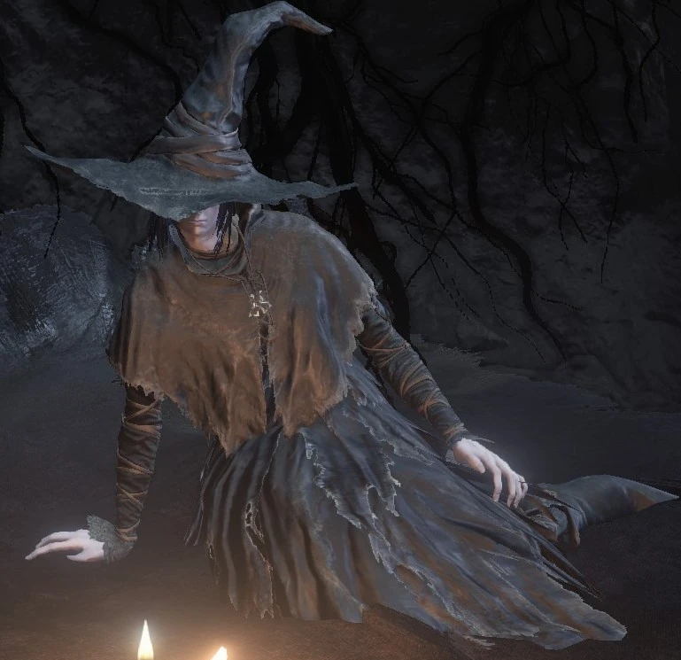

← Volver
← Volver
Karla es un NPC de Dark Souls III. Karla es un mercader en Dark Souls III que se especializa en vender piromancias, hechizos y milagros oscuros. Ella puede ser encontrada por primera vez encerrada en una celda en el piso más bajo del Calabozo de Irythill, ubicado cerca del grupo principal de Carceleros. Para liberarla, deberás recuperar la llave de la celda, que puede ser encontrada en otro lugar del calabozo. Luego puede ser encontrada en el Santuario del Enlace de Fuego, en un espacio bajo las escaleras a la izquierda del Herrero Andre.
| Objetos | Cantidad | Probabilidad | Suerte | |
|---|---|---|---|---|
| Sombrero Puntiagudo de Karla | 1 | 10% | No | |
| Abrigo de Karla | 1 | 10% | No | |
| Guanteletes de Karla | 1 | 10% | No | |
| Pantalones de Karla | 1 | 10% | No | |
| Cenizas de Karla | 1 | 10% | No | |
| Objetos | Cantidad | Almas | Requerimiento |
|---|---|---|---|
| Afinidad | 1 | 15000 | - |
| Filo Oscuro | 1 | 8000 | - |
| Látigo de Fuego | 1 | 10000 | Entregar Tomo de Piromancia de Quelana |
| Tormenta de Fuego | 1 | 15000 | Entregar Tomo de Piromancia de Quelana |
| Compenetración | 1 | 7000 | Entregar Tomo de Piromancia de Quelana |
| Llama Negra | 1 | 10000 | Entregar Tomo de Piromancia del Guardián de Tumbas |
| Orbe de Fuego Negro | 1 | 10000 | Entregar Tomo de Piromancia del Guardián de Tumbas |
| Voto de Silencio | 1 | 15000 | Entregar Tomo Divino en Braile de Londor |
| Muerto de Nuevo | 1 | 5000 | Entregar Tomo Divino en Braile de Londor |
| Hoja Oscura | 1 | 10000 | Entregar Tomo Divino en Braile de Londor |
| Roer | 1 | 2000 | Entregar Tomo Divino en Braile de las Profundidades |
| Protección Profunda | 1 | 4000 | Entregar Tomo Divino en Braile de las Profundidades |
Diálogo del primer encuentro
"Ah, ahí estás. Pensé que casi me habías olvidado. Qué dulce. Me alegra saber que una hereje flacucha todavía puede llamar la atención."
"¿Mmm? Oh... no eres uno de ellos, ¿verdad? Acepta mis disculpas por confundirte con una de esas sanguijuelas. Entonces, ¿qué asuntos tienes aquí? Esta es una tierra de monstruos. Y yo no soy la excepción."
Al ofrecerle ayuda
"¿Estás aquí para salvarme...? Pero soy culpable. Un miserable hijo del Abismo. ¿Es eso algo que puedas perdonar?"
Al negarse a ayudarla
"Eres muy franco. Si no tienes nada que hacer aquí, márchate de inmediato. Por tu propio bien."
Opción "salvarla de todos modos"
"Ah, sí. No eres un hombre cualquiera. —Muy bien. Además, me he cansado de la cárcel. —Soy Karla y acepto tu propuesta."
Opción "no salvarla"
"Eres muy franco. Si no tienes nada que hacer aquí, márchate de inmediato. Por tu propio bien."
Hablar con ella nuevamente luego de elegir no ayudarla
"¿Qué pasa? ¿Algo más? Ah, no te preocupes por mí, estoy atrapado aquí de todas formas."
Segundo encuentro (Santuario del Enlace de Fuego)
"Ahh, ahí estás. Como dije, soy Karla. Y te estoy agradecida. Ahora, ¿qué hacemos? Lo único que podría interesarte es mi hechicería. Aunque mis artes oscuras son detestables. Eso no te interesaría, ¿verdad?"
Al pedirle aprender hechicerías oscuras
"Hm. Eres un malvado, ¿verdad? Muy bien. Los humanos son de la oscuridad, y tú no eres diferente. Algunos pueden apartar la mirada, pero la verdad sigue siendo la verdad. Pero ten cuidado. Pocos humanos conocen este conocimiento. Que sea un secreto, entre tú y yo..."
Al negarse a aprender hechicerías oscuras
"Hm. Muy lamentable No tengo nada más, ya ves, nada en absoluto. ¿Lo has olvidado tan pronto? Ese lugar es hogar solo de cosas monstruosas, y yo no soy la excepción".
Hablar luego de negarse a aprender
"Ahh, hola. Lamento decir... Esto es todo lo que tengo. Hechicerías detestables que se adentran en la oscuridad del hombre...".
Saludarla
"Ahh, hola de nuevo. Gracias a Dios. Sí, sí, supongo que necesitas mis hechizos. —Ah, hola de nuevo. Menos mal. Uno puede encariñarse mucho, incluso con un aprendiz torpe. Oh, no hablo en serio.".
Primera opción "hablar"
"Hay algo que debes saber. Hay una oscuridad dentro del hombre, y temo que la mires. Si el miedo provocará la introspección o una nostalgia ruinosa... ...depende totalmente de ti. No temas, tu elección no te traerá desprecio."
Entregarle el Tomo de Piromancia de Quelana
"Oh, ¿un tomo de piromancia? Quelana, Bruja de Izalith... bueno, esta piromancia es fascinante... Muy bien. Si ese es tu deseo, lo desenredaré lo mejor que pueda. Además, será un placer ser el maestro por una vez."
Entregarle el Tomo de Piromancia del Guardián de Tumbas
"Oh, ¿otro tomo de piromancia? Y uno que resuena con la oscuridad, sí, me viene de maravilla... (risas) Puede que sea un hechicero hereje, ¡pero tú solo me traes piromancias! ¡Qué muchachito diabólico...!"
Entregarle cualquier Tomo Divino
"Oh, ¿es esto un Tomo Divino? ¿ En qué demonios estás pensando? No me acercaría a un Tomo Divino, ni a ningún supuesto milagro. Y los que hacen milagros se mantienen alejados de mí. Así que, por favor. No me tortures así."
Insistir en entregarle cualquier Tomo Divino
"Ahhh, tú, ¿cómo pudiste...? Ahhh... Ya lo sé, ya lo sé. Te debo la vida. Bien, entonces. Solo por esta vez, te contaré esta historia. Pero entiende que será mi primera vez. No me reiré si me equivoco."
Luego de entregarle sus ojos a la Guardiana de Fuego
"¿Te has perdido en tu camino? No importa; los perdidos de hoy son vencedores mañana. Solo demuestra la formación de un campeón. Y además, no cambiará mi gratitud ni lo que pienso de ti. (Y además, sea cual sea tu elección... no cambiará mi gratitud ni lo que pienso de ti)."
Al marcharte
"Por favor, mantente a salvo."
Al morir
"Eres voluble y cruel..."

 ↑
↑